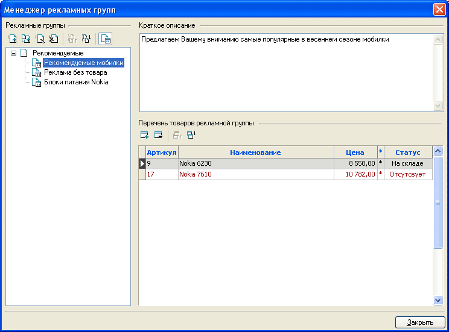
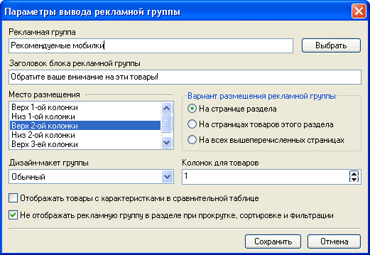
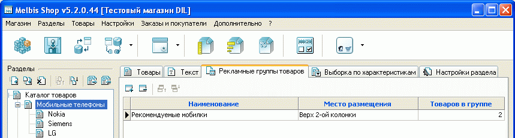
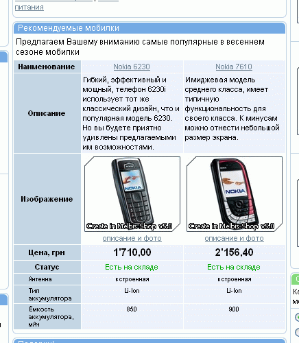
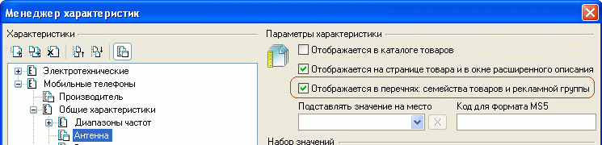
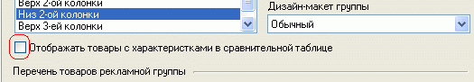
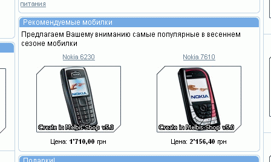
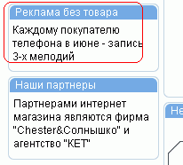

Имеется возможность обьединения нескольких товаров с обобщающим описанием в рекламную группу. Рекламная группа необязательно должна включать в себя товары и текстовое описание. Таким образом, рекламная группа может состоять только из текстового блока или только из товаров. После создания рекламная группа может быть привязана к определенному разделу или товару интернет-магазина.
Объединение товаров в рекламную группу производится путем создания группы и занесения в нее товаров с помощью менеджера рекламных групп, вызываемого из главного меню "Товары - Особые - Рекламные группы". Таких групп может быть несколько. Они, в свою очередь, могут объединяться в разделы. В левой части окна менеджера рекламных групп отображается дерево рекламных групп. Разделы и рекламные группы можно добавлять, удалять, переименовывать, группировать, сортировать:

Для обозначения того, чем - разделом или рекламной группой - является вновь
созданный объект, служит кнопка  ,
расположенная над деревом рекламных групп.
,
расположенная над деревом рекламных групп.
Раздел не имеет своих значений, а только группирует схожие подразделы или рекламные группы.
Дерево разделов служит для логического упорядочения рекламных групп и на страницах магазина отображаться не будет.
Когда рекламная группа привязывается к товару или к разделу, то для каждой из них задается место ее размещения (верх или низ первой, второй или третьей колонки или иное, если оно определено иначе в редакторе дизайн-макетов и мест размещения данных), число колонок для отображения товаров, дизайн макет-группы. Таким образом, одну и ту же рекламную группу можно отображать в разных местах и в разном стиле оформления (дизайн-макет группы).

Помимо этого указывается, отображать ли в сравнительной таблице характеристики товара, либо выводить их обычным списком, как, скажем, хиты продаж или новинки. Особого внимания заслуживает опция "Вариант размещения рекламной группы". Благодаря ей можно не привязывать одну и ту же рекламную группу индивидуально к каждому товару ( через его карточку, закладка "Рекламные группы"), а назначить эту группу разделу, указав вариант размещения "На страницах товаров этого раздела".
Привязка рекламных групп к разделам происходит на вкладке "Рекламные группы товаров" для каждого раздела (кроме раздела типа "Ссылка на страницу"), при этом следует указать, какие из созданных рекламных групп отображать на этой странице.

Таким образом, одна и та же рекламная группа может быть добавлена и на первую страницу, и на конкретный раздел, или к конкретному товару.
Для приведенных выше настроек вверху второй колонки страницы будет выведено окно:

Следует отметить, что в окне рекламной группы отображаются не все характеристики, назначенные данному товару, а только те, которые отмечены в менеджере характеристик специальной опцией "Отображается в перечнях семейства товаров и рекламной группы". Как правило, это ключевые характеристики товара:

Если же в окне менеджера рекламных групп не задавать опцию "Отображать товары с характеристиками в сравнительной таблице":

то рекламная группа товаров будет отображаться без характеристик:

Возможно создание рекламной группы с описанием, однако без внесения в нее товаров, в этом случае отображение рекламной группы аналогично отображению текстового блока (дизайн иллюстрации может отличаться от приведенного):
